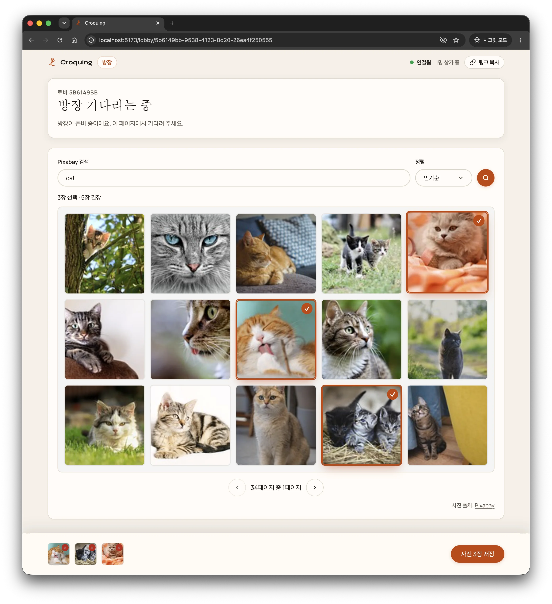
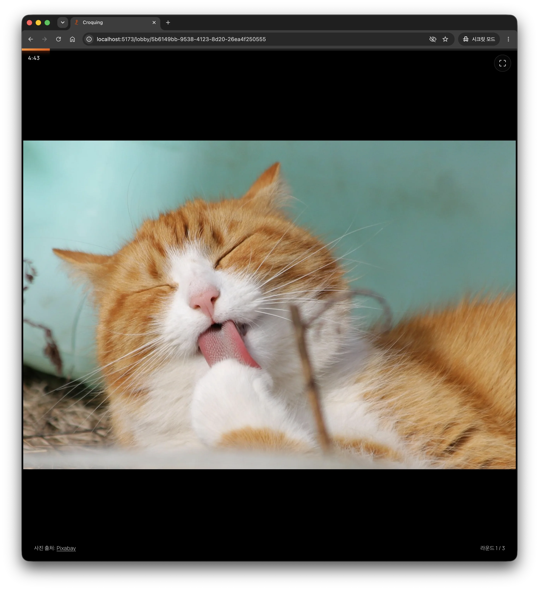

클릭 한 번으로 함께 그릴 방을 만듭니다
클릭 한 번으로 함께 그릴 방을 만듭니다. 참가자들에게 링크만 보내면 준비는 끝납니다. 번거롭게 프로그램을 설치하거나 회원 가입을 할 필요 없이 브라우저에서 바로 접속할 수 있습니다.
모든 참가자가 완벽하게 일치하는 화면을 보며 함께 크로키를 그립니다. 서버가 타이머를 통제하고 고해상도 포즈 사진을 무작위로 보여주며, 모든 브라우저의 진행 상태를 실시간으로 맞춰 줍니다.



클릭 한 번으로 함께 그릴 방을 만듭니다. 참가자들에게 링크만 보내면 준비는 끝납니다. 번거롭게 프로그램을 설치하거나 회원 가입을 할 필요 없이 브라우저에서 바로 접속할 수 있습니다.
앱 내에서 드로잉 포즈를 검색하고 바로 고를 수 있습니다. 방장이 사진 목록을 짜면 순서가 무작위로 뒤섞이며, 그리기가 시작되기 전까지는 아무에게도 이미지가 보이지 않습니다.
모든 사람이 같은 순간에 같은 포즈를 그립니다. 서버 시간과 똑같이 흘러가는 타이머에 따라 이미지가 나타나고, 제한 시간이 끝나면 즉시 가려집니다. 모두가 정해진 규칙대로 공정하고 흐트러짐 없이 창작에만 집중하도록 돕습니다.
기존의 화상 회의 화면 공유 방식에서 겪었던 크고 작은 불편함을 해결하고자 만들었습니다.
화면을 압축해 전송하느라 화질이 깨지고 끊김이 심한 화상 회의 방식과는 다릅니다. Croquing은 참가자 기기에서 고해상도 원본을 바로 불러옵니다. 세밀한 인체 구조와 묘사선 하나까지 왜곡 없이 뚜렷하게 관찰해 보세요.
시작하기도 전에 이미지를 미리 훔쳐보는 일을 완벽히 막아줍니다. 방장이 제한 시간(1~60분)을 맞추면 서버 타이머가 작동해 모두의 화면을 일시에 정렬합니다. 라운드가 시작될 때만 열리고 시간이 지나면 칼같이 사라집니다.
방장은 관리 패널에서 인체 포즈를 몇 초 만에 검색해 추가합니다. 원작자 출처도 자동으로 같이 표시해 저작권 권장 사항과 커뮤니티 규칙을 모범적으로 준수합니다.
순간을 포착하는 제스처 드로잉의 묘미를 지키고자 사진 순서를 무작위로 섞습니다. 카운트다운이 끝나 이미지가 열리기 전에는 그 누구도 다음 모델이나 포즈가 무엇일지 미리 짐작할 수 없습니다.